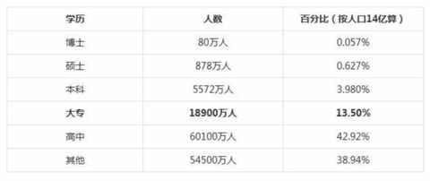
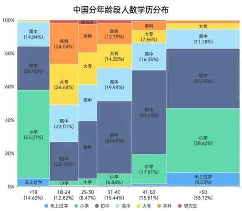
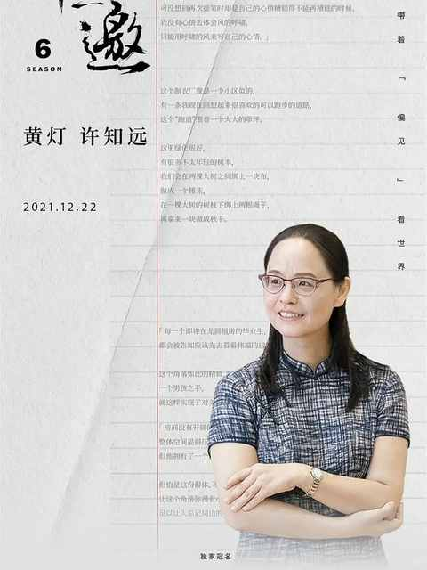
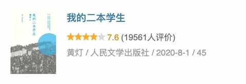
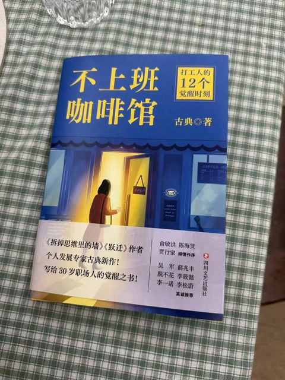
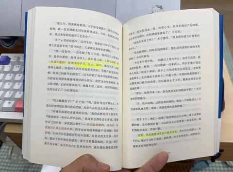

想写一个系列，讲讲我的专科朋友们
一、为什么想写一个系列？
1️⃣ 选择困难：每次决定写哪个选题耗费太多时间
要么是之前写过，不想重复去说
要么是没写过，但是又没几句话能写
思来想去，还是和自己相关的选题更能坚持下去，也更适合当下的状态。
2️⃣ 深度思考：系列内容能带来更多的思考
即使是一样的事情在不同事情的观点可能会改变
系列内容能更好地沉淀
3️⃣ 符合趋势：当下不少热门内容都是一个个系列
例如：去年在抖音上很火的一个账号，刚开始主打的就是采访十年前高考考得最好的那些人。

二、为什么是讲讲专科的朋友们？
1️⃣ 核心原因：从个人视角出发，本人是专科生（2009-2012）
同学和朋友们有挺多也都是和我一样的学历，他们和我最大的不同是：我高考连续考三次，每次都被专科录取，他们大多都仅体验过一次高考。
2️⃣ 比例不低：遍历数据会发现，专科生的比例并不低


3️⃣ 敢于表达：要发出自己的声音，越不表达越没有话语权
互联网上很缺失的是普通人的真实表达
有一些内容是假借普通人的视角去调动大众情绪
三、受到了哪些内容的启发？
1️⃣ 综艺节目：《十三邀 第六季》第一期节目

这本书在种草 2 年多后，近期终于是去看了，书中详实的记录了黄灯老师作为班主任，所经历的两届学生的故事。

2️⃣ 播客内容：有海量的节目可供选择
刚开始会密集的听很多宏观的内容、大厂员工、 海外留学生等等的分享，后面越听越觉得难以共鸣，这些内容距离我的工作和生活都很遥远，反而徒增焦虑与烦恼。
后面这个类型的播客就越听越少，会依据自身的需求和爱好去选择内容，例如最近半年听的觉得有启发的播客订阅数都不多。
在思考这个选题的时候也检索到已经有一些值得参考的节目：
3️⃣ 书籍内容：古典老师的新书，《不上班咖啡馆》
其中聊到有三件不能停的事情：学习、见人、输出。


这三件事情，我做的都不足都很少，如果把阅读也作为学习方式的一种的话，在见人和输出方面都做的太少太少。
希望借助本次输出相关内容的契机，补一补这两块短板。
四、什么时候开始和更新频次？
国庆前先准备内容框架，预估国庆后才能正式开始，更新频次会尽量保持一周一更或每两周一更。
目前是做到 100 期，最低目标是 50 期。